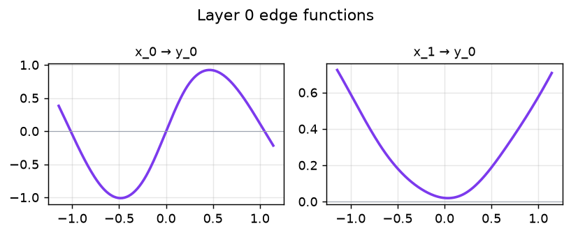
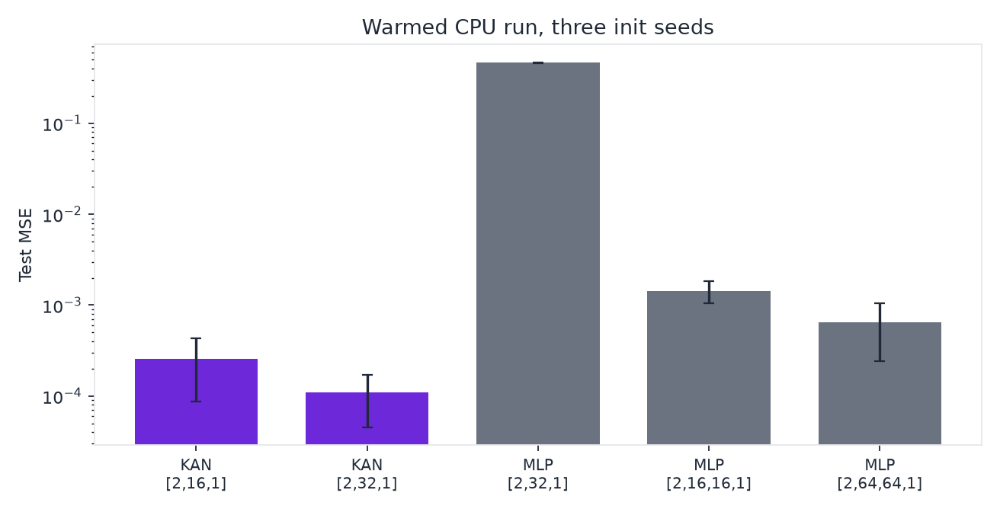

🚀 kanx
Production-grade Kolmogorov-Arnold Networks
TensorFlow + PyTorch + ONNX — one library, four surfaces.


pip install kanx· A small KAN beats a 10× larger MLP on smooth, separable targets — honest, param-matched benchmark below. One library. Two backends. Real ONNX export. Docker + Kubernetes ready. Prometheus metrics, TensorBoard logging, Hub and symbolic extras are now implemented.
⚡ The 30-second magic moment#
import kanx
# Build, train, predict — in one call. No config files. No compile dance.
model = kanx.quickstart() # trains on synthetic 2-D data
model.predict([[0.5, 0.2]]) # → array([[1.04…]])
⚠️ Grid calibration — two methods
The stored knots default to
[-1, 1](grid_size=5is six knots, spacing 0.4).extend_gridaddsspline_orderknots of that spacing on each side, so the default cubic basis runs out to about ±2.2. The basis sums to 1 on the stored interval, is still nonzero at 1.7 (the sum is about 0.32), and is exactly zero at and beyond the outermost knot. Past that knot the layer is only the SiLU residual. Put the stored interval on the data one of two ways:Static approach (pre-training):
from kanx import KAN, fit_grid_to_data model = KAN([n_features, 64, 1]) model.build((None, n_features)) # weights exist only after build fit_grid_to_data(model, X_train) # one-time grid fit model.fit(X_train, y_train, epochs=30)Adaptive approach (during training — recommended):
model = KAN([n_features, 64, 1]) model.fit(X_train, y_train, epochs=15) model.update_grid_from_samples(X_train) # ← refine grid based on data model.fit(X_train, y_train, epochs=15) # continue training
kanx.check_input_range(model, X)logs a warning when a row leaves the stored grid. That boundary is the interval you fit, which is stricter than the hard zero at the outermost knot.
Zero out edges that barely contribute. prune sets the spline coefficients and the base weight to zero. It does not remove the slot, and the contraction still visits it. threshold is an absolute cutoff on the edge score. relative zeros edges at or below that fraction of the strongest edge in the same layer. Pass samples to score each edge by its RMS on real inputs. The same method is on the PyTorch KAN and on MatrixKAN.
model.prune(relative=0.01) # zero edges at or below 1% of the peak
model.prune(threshold=1e-3, samples=X_train) # coefficients become zero; shapes stay
Plot what is left. Each edge is a learned 1-D function (SiLU residual plus B-spline). plot_edges needs matplotlib (pip install "kanx[viz]"). write_edge_viewer writes a single HTML file with a layer picker and a hover readout.
from kanx.viz import plot_edges, write_edge_viewer
plot_edges(model, path="edges.png")
write_edge_viewer(model, "edges.html")

Layer 0 of a KAN([2, 1]) fit to sin(π x₁) + 0.6 x₂². The left edge follows the sine. The right edge follows a bowl. That is a reading of this plot. It is not a proof that each edge owns one term, and a shorter fit of the same target can leave the right side of the bowl unfinished.
The TensorFlow spline contraction can run in reduced precision, and the forward pass can be XLA-compiled. Weights and the returned tensor stay float32. The Cox–de Boor basis stays float32 because (x − tᵢ) cancels near a knot and the divided differences amplify the error. bfloat16 has fewer mantissa bits than float16 (8 versus 11), so it is the worse choice for the basis. Float16's largest finite value is 65504. That is a property of the format, not an overflow measured in this contraction: on these knots the cubic basis peaks at 2/3, and the coefficients start small. bfloat16 is the practical training dtype because float16 gradients underflow when training does not use loss scaling. Knot spacing does not underflow in float16 at grid size 5 (spacing 0.4) or at grid size 1000 (spacing 0.002). Against a float64 b_spline_basis on the same extended knots, the max absolute error is 1.9×10⁻⁷ in float32 and 1.5×10⁻³ in float16 at grid size 5 (1.2×10⁻² in bfloat16). At grid size 1000 it is 2.5×10⁻⁵, 0.16, and 0.67. The grid-size-1000 gap is mostly the input rounding onto a step comparable to the 0.002 knot spacing.
precision is float32 (default), float16, or bfloat16. jit_compile=True compiles on the first call. Batch size may change; the feature width may not. The same arguments exist on KANLinear. PyTorch is unchanged. Do not export a jit_compile=True layer to ONNX; trace the default float32 layer instead. Reduced precision is close to float32, not bit-exact. bfloat16 is the practical training dtype.
Want more control? Same simplicity, your data:
from kanx import KAN
import numpy as np
X = np.random.uniform(-1, 1, (1024, 2)).astype("float32")
y = np.sin(np.pi * X[:, :1]) + X[:, 1:2] ** 2
model = KAN([2, 64, 1])
model.fit(X, y, epochs=30, verbose=0) # auto-compiles with Adam+MSE
model.predict(X[:3])
🔥 PyTorch? Same API.#
from kanx.torch import KAN
import torch
model = KAN([2, 64, 1])
X = torch.randn(1024, 2); y = torch.sin(torch.pi * X[:, :1])
model.fit(X, y, epochs=30, lr=1e-2) # one-liner, same semantics
model.predict([[0.5, 0.2]])
⚡ MatrixKAN#
MatrixKAN is experimental. It evaluates the same Cox–de Boor basis as KAN, with a Python loop over each basis index. build_recurrence_matrix_batch is not used, and a constant matrix cannot represent the recursion because the weights depend on x. The 0.2.0 docstring called this a batched GEMM. That description was wrong.
The table below times that loop, not a matrix algorithm. Tesla T4, torch 2.11.0+cu130, kanx 0.2.0, float32, grid size 5, spline order 3, shape [2, width, 1]. Ten warmup calls, then the mean of 50, with torch.cuda.synchronize around the loop. Cells are MatrixKAN milliseconds divided by KAN milliseconds. The JSON is benchmarks/results/matrixkan_t4_0.2.0.json.
| width \ batch | 1,024 | 4,096 | 8,192 | 16,384 |
|---|---|---|---|---|
| 32 | 6.41 | 6.37 | 5.53 | 3.24 |
| 64 | 6.58 | 5.88 | 3.59 | 3.32 |
| 128 | 6.72 | 3.32 | 3.35 | 3.30 |
| 256 | 5.74 | 3.37 | 3.32 | 3.29 |
| 512 | 3.33 | 3.32 | 3.29 | 3.27 |
At width 32 and batch 4,096 the calls are 2.10 ms and 13.37 ms. At width 512 and batch 16,384 they are 67.0 ms and 219 ms. The ratio falls from 6.4× to 3.3× and stays there. At the small end the extra cost is kernel launches. A uniform-grid cubic basis can be one small multiply on [1, u, u², u³]. That path is not this class.
📦 Installation#
pip install kanx # core (TensorFlow)
pip install "kanx[torch]" # +PyTorch backend
pip install "kanx[onnx]" # +tf2onnx + onnxruntime
pip install "kanx[api]" # +FastAPI service
pip install "kanx[hub]" # +HuggingFace Hub integration
pip install "kanx[symbolic]" # +Symbolic regression hooks
pip install "kanx[viz]" # +matplotlib for plot_edges
pip install "kanx[all]" # everything (api + torch + onnx + hub + symbolic + viz + dev + docs)
Optional extras:
* kanx[api] adds FastAPI serving with /metrics Prometheus scraping.
* kanx[torch] adds the PyTorch backend, MatrixKAN, and symbolic helpers.
* kanx[hub] adds push_to_hub() / from_pretrained() for HuggingFace integration.
* kanx[symbolic] adds SymbolicFitter for post-hoc edge function extraction.
* kanx[viz] adds matplotlib so kanx.viz.plot_edges can draw the learned curves. The HTML viewer does not need it.
→ Open in Colab: Train a KAN in 2 minutes
📊 Benchmarks (reproducible, fair, multi-baseline)#
Synthetic 2-D regression target y = sin(π·x₁) + cos(2π·x₂),
100 epochs, Adam(lr=1e-2), batch=128.
Intel Core i9-9900 at 3.10 GHz, Windows, Python 3.11.17, TensorFlow 2.21.0.
Init seeds 0, 1, and 2 share one dataset. Inference is ten warmup forwards of 4,096 rows, then the median of twenty. The ± is the population standard deviation across seeds.
| Model | Params | Train (s) | Infer 4k (ms) | Test MSE |
|---|---|---|---|---|
| KAN[2,16,1] | 432 | 9.42 ± 0.12 | 26.72 ± 0.31 | 2.58×10⁻⁴ ± 1.71×10⁻⁴ |
| KAN[2,32,1] | 864 | 11.12 ± 0.18 | 29.15 ± 0.46 | 1.09×10⁻⁴ ± 6.34×10⁻⁵ |
| MLP[2,32,1] | 129 | 6.09 ± 0.07 | 2.06 ± 0.03 | 4.62×10⁻¹ ± 1.40×10⁻³ |
| MLP[2,16,16,1] | 337 | 6.78 ± 0.23 | 2.90 ± 0.05 | 1.44×10⁻³ ± 3.83×10⁻⁴ |
| MLP[2,64,64,1] | 4417 | 7.00 ± 0.07 | 3.53 ± 0.05 | 6.43×10⁻⁴ ± 4.02×10⁻⁴ |

Honest read. The wider KAN has the lower mean test MSE. The smaller KAN's test MSE moves by about as much as its mean across the three seeds. Inference increases with width, 26.7 ms then 29.2 ms. Both are several times the MLPs on this CPU: KAN[2,16,1] is 7.57× MLP[2,64,64,1]. The 0.2.0 tables each timed one unwarmed forward and are not averaged into these cells. On non-smooth or high-dimensional targets, this accuracy picture often reverses. We do not claim KANs are universally better than MLPs.
Reproduce with python benchmarks/compare_mlp.py (quick, 100 epochs) or
python benchmarks/compare_mlp.py --long (1000 epochs + early-stopping).
python benchmarks/real_world.py --device cuda trains the PyTorch KAN and MLP
in a child process, so TensorFlow and PyTorch do not initialize CUDA in one
process. CPU runs and --smoke stay TensorFlow-only.
🧠 How kanx compares to other KAN libraries#
| pykan | efficient-kan | mlx-kan | kanx | |
|---|---|---|---|---|
| Framework | PyTorch | PyTorch | MLX (Apple Silicon) | TF + PyTorch |
| Vectorized B-spline | partial | ✅ | ✅ | ✅ |
| ONNX export | ❌ | ❌ | ❌ | ✅ both backends |
| REST API service | ❌ | ❌ | ❌ | ✅ FastAPI |
| Docker + K8s | ❌ | ❌ | ❌ | ✅ |
| Property-based tests | ❌ | ❌ | ❌ | ✅ Hypothesis |
| Test coverage | research | research | research | CI + Hypothesis |
| PyPI | ✅ | ✅ | ✅ | ✅ |
| CI/CD release pipeline | ❌ | ❌ | ❌ | ✅ PyPI + GHCR + Pages |
kanx is the only KAN library purpose-built for production deployment.
Research-y libs are great for novel experiments; kanx is what you ship.
🌐 REST API#
| Method | Path | Purpose |
|---|---|---|
GET |
/api/health |
Liveness + model load source |
GET |
/api/info |
Version + TF/Torch + model summary |
GET |
/metrics |
Prometheus scrape endpoint |
POST |
/api/predict |
Inference (single or batch) |
POST |
/api/load |
Hot-swap checkpoint |
POST |
/api/reset |
Re-init from KANX_CONFIG |
curl -X POST http://localhost:8000/api/predict \
-H 'content-type: application/json' \
-d '{"x": [[0.1, -0.2], [0.5, 0.7]]}'
The startup contract loads KANX_CHECKPOINT if it exists, otherwise falls
back to a fresh model built from KANX_CONFIG. Boundaries are validated:
wrong feature count → 400, oversized batch → 413, missing checkpoint → 404.
🔄 ONNX export#
# From PyTorch
from kanx.torch import KAN, export_onnx
model = KAN([2, 64, 1])
export_onnx(model, "kan.onnx")
# From TensorFlow
from kanx import KAN, export_onnx_tf
import tensorflow as tf
model = KAN([2, 64, 1]); model(tf.zeros((1, 2)))
export_onnx_tf(model, "kan.onnx")
✔ Dynamic batch ✔ Verified numerical consistency (1e-5) ✔ Works with ONNX Runtime / TensorRT / OpenVINO
🐳 Docker / ☸️ Kubernetes#
docker run --rm -p 8000:8000 ghcr.io/mattral/kanx:latest
kubectl apply -f k8s/ # Deployment + Service + Ingress + HPA + PVC
helm install kanx-api charts/kanx # same objects, parameterized
K8s manifests ship with rolling updates, readiness/liveness probes on
/api/health, an HPA (2 ↔ 10 replicas, CPU-target 70%) and a PVC for the
model registry. Use the raw manifests or the chart, not both, when the
release name is kanx-api. Install notes: charts/kanx/README.md.
🛠️ CLI#
python -m kanx info # versions
python -m kanx train --config configs/default.yaml # train
python -m kanx predict --checkpoint model.keras --input X.json
📚 Documentation#
→ https://mattral.github.io/KANX/ (MkDocs Material)
| Page | What's inside |
|---|---|
| Quickstart | Train your first KAN in 60 seconds |
| Architecture | Package layout, module contracts |
| System Design | Serving topology, scaling, failure modes |
| REST API | Endpoint reference + curl examples |
| Testing | Test pyramid, numerical invariants |
| Deployment | CI/CD, rollout, observability |
| Benchmarks | KAN vs MLP — methodology + numbers |
📄 Research Paper#
If you use kanx in academic work, please cite both the original paper and the library. Our work is formally documented and available as a preprint:
- 📘 Title: Bridging Theory and Practice with KANX
- 📍 DOI: https://doi.org/10.5281/zenodo.20430883
- 📂 Zenodo: https://zenodo.org/records/20430883
- 📄 Read Paper (preprint)
Citation#
@article{mattral2026kanx,
title={Bridging Theory and Practice with KANX},
author={Myet, Min Htet},
year={2026},
doi={10.5281/zenodo.20430883},
publisher={Zenodo}
}
@article{liu2024kan,
title = {KAN: Kolmogorov-Arnold Networks},
author = {Liu, Ziming and Wang, Yixuan and Vaidya, Sachin and Ruehle,
Fabian and Halverson, James and Soljačić, Marin and
Hou, Thomas Y. and Tegmark, Max},
journal = {arXiv preprint arXiv:2404.19756},
year = {2024}
}
References#
- Liu et al., KAN: Kolmogorov-Arnold Networks — arXiv:2404.19756
- The Kolmogorov-Arnold representation theorem (Wikipedia)
- B-splines & de Boor algorithm — Carl de Boor (1972)
🤝 Contributing#
PRs welcome! See CONTRIBUTING.md. Good places to start:
- 🔖 Good first issues
- 🗺️
roadmap.md— P0 / P1 / P2 backlog - 💬 Discussions
📜 License#
Apache 2.0. Use it. Ship it. Tell us when you do — we'd love to hear how kanx is being used in the wild.
⭐ Star the repo if kanx saved you time!